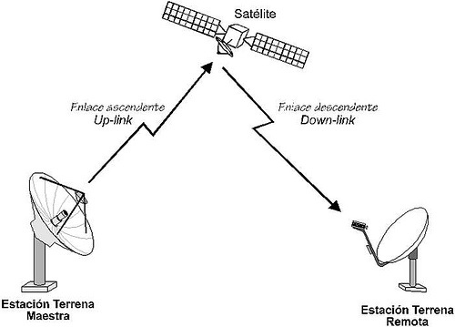
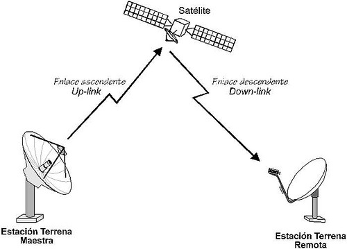

Introducción
Los medios no guiados son aquellos que transmiten señales a través del espacio libre sin utilizar un conductor físico. Estos medios son esenciales para la comunicación inalámbrica. Proakis destaca su flexibilidad y movilidad.
Desarrollo
Las señales se propagan mediante ondas electromagnéticas y pueden cubrir grandes distancias. Sin embargo, son más susceptibles a interferencias y ruido. Stallings explica que su uso es fundamental en comunicaciones móviles y satelitales.
 

Conclusión
En conclusión, los medios no guiados permiten una comunicación flexible y global, aunque presentan desafíos en cuanto a interferencia y seguridad.